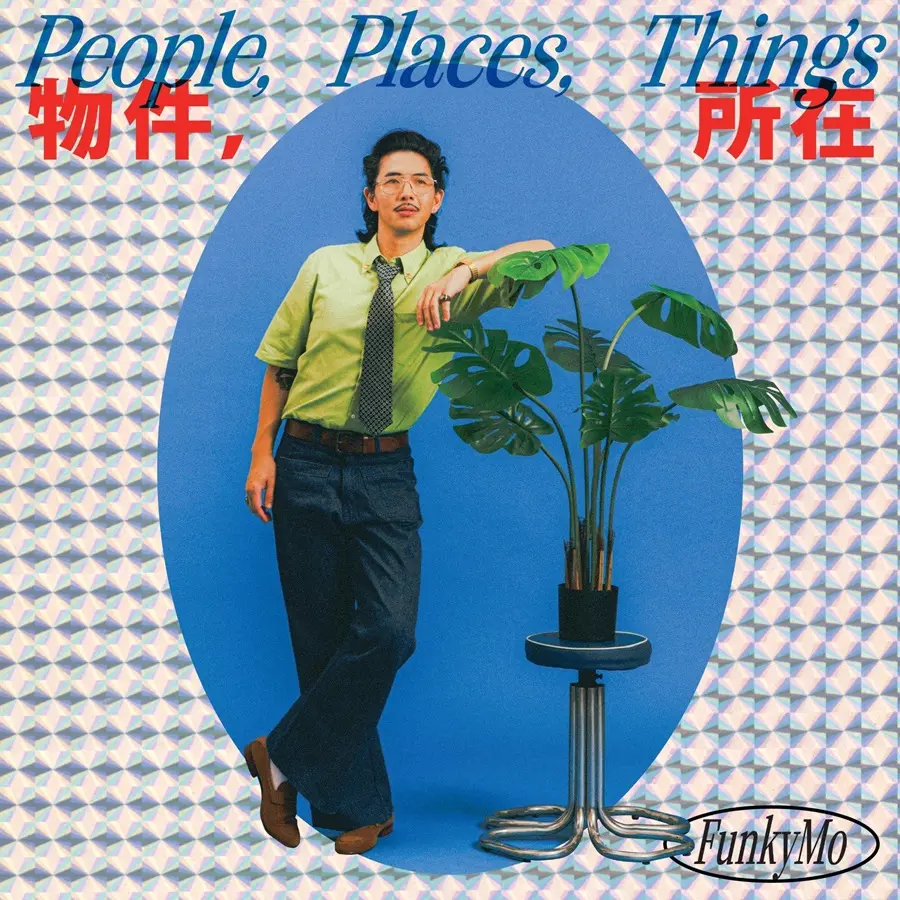

Album#29
物件，所在
{kind=link}

专辑信息
- 专辑名称：物件，所在
- 歌手：FunkyMo
- 年份：2024-09-03
- 风格：R&B、Soul、Funk
- 时长：26:38

今天每日推荐的第一首是 FunkyMo 的 「Maybe Next Time」，旋律和歌声出来的时候，我就喜欢上了，听着很舒服，像是在透着午后阳光的窗边，悠哉地喝着咖啡时的心情。
整张专辑给人带来的是一种松弛感，歌词经常出现没关系的、等到下一次也可以、别紧张，编曲也不错，让人想要舞动起来。
专辑介绍
即使过往的经历叫我们收紧消化我们自己的情绪，我们还是要从我们所触碰到的人事地物中找到我们的喜怒爱怨的痕迹。我们爱过的人，役于的物，开门迎接你摇摆的尾巴，构成我们在时间中的剪影。在我们看不到自己的时候，听听我们对于这些事物的描绘，帮助我们看到我们的心真实的样貌。
使用两种语言交杂创作，台语是儿时的自己，是与这个土地的连结，是自己 35 年来被动聆听留存在脑内的声响，英文是成年之后带我领会音乐，出国旅居学习所使用的语言。使用非华语创作，强迫我们自己站在我们不习惯的大脑空间审视我们的人生经验，让我们重新思考如何讲述我们的故事。
编曲中满满的复古声响，借用美国的黑人福音音乐元素，些许的叛逆想要偏离主流听众流行曲目的声响，实现我心目中属于台湾本土的 R&B 应该要有的样子，专辑结尾沉静却暗潮汹涌的另类电音，是梦醒时刻对于 2019 年回到台湾，一心只想做电音的 FunkyMo 的点头致意。
专辑的每一首歌都是爱的样貌，不论是对于老车的沉醉，爱犬对我的呼唤，对于时光流逝的哀叹或是人生无力无解与无奈。不论快乐或是悲伤，这张专辑都应该有一首可以舞动的歌，踏步旋转跳跃也好，缓慢独舞摇摆也行，用旋律，文字让把我们原本扁平的样貌立体化，让听众在歌曲中找到一个可以带入自己的故事世界。
TRACKLIST
Hotel Skit
场内灯光已经又熄又亮了三次，还在外面聊天的朋友请迅速就坐，那位抽到第三根烟的同学可以先熄了，专辑正要开始！
Make It Count
当你爱上了每天上班路上都会遇到的漂亮女孩，为了一亲芳泽，你的脑袋已经自己开启了一个痴迷的世界。悉心准备三个月，终于等到那一天可以约她出来，对于你们的美好未来你的心中早就有了安排直到永远，鼓起勇气追求自己心目中的幸福，孤注一掷的心跳加速让你停不下脚步，早就准备好要冲一发。可是这真的是约会吗？还是藏有更黑暗的隐情，听完这首歌你就知道了。
我的 Sunroof top 開開予妳吹風 這首歌播煞咱來四界走傱
I got diamond in the back 明仔載掛妳手中 除了 Say bye bye 我攏有準備好
I ain't got no sleep 就為著今仔日見面 目睭閃閃爍 看妳我就有精神
I just wanna shout 全世界我上緣投 心內蹦蹦跳 規身軀親像中猴
等了三個月 等著這工 I wanna make it count
我心內有足濟款的想法 Whichever game you want
若是這馬妳開始頓蹬 我會心痛流血
And you don't wanna see that happen my lady
So babe babe babe babe (寶貝寶貝寶貝)
Let's have the best day ever forever
我知影妳會閉思 我嘛仝款
為著咱的感情 這擺特別勇敢
看妳流目屎 我真正會槌心肝
我干焦想欲有妳佇我的生活
油門催落這馬聽妳唱歌 聲音遮爾幼秀
戀愛毋是逐日脫褲脫衫 有時縛腳縛手
等了三個月 等著這工 I wanna make it count
我心內有足濟款的想法 Whichever game you want
若是這馬妳開始頓蹬 我會心痛流血
And you don't wanna see that happen my lady
So babe babe babe babe (寶貝寶貝寶貝)
Let's have the best day ever forever
歌词大意
我的天窗打开让你吹风
这首歌放完我们四处去兜风
I got diamond in the back 明天挂在你手中
除了说再见 我都已准备好
整夜没睡就为了今天见面
眼睛闪闪发亮 看到你我就有精神
I just wanna shout 全世界我最英俊
心里扑通跳 全身像中邪般躁动
等了三个月 等着这天 我要让它值得
我心里有很多想法 Whichever game you want
如果这时你开始犹豫退缩 我会心痛流血
And you don't wanna see that happen my lady
So babe babe babe babe (宝贝宝贝宝贝)
Let's have the best day ever forever
我知道你会犹豫 我也一样
为了我们的感情 这次特别勇敢
看你流眼泪 我真的会痛彻心扉
我只想要有你在我的生活
油门踩下去 现在听你唱歌 声音如此优美
恋爱不是每天肌肤相亲 有时也会束手束脚
等了三个月 等着这天 我要让它值得
我心里有很多想法 Whichever game you want
如果这时你开始犹豫退缩 我会心痛流血
And you don't wanna see that happen my lady
So babe babe babe babe (宝贝宝贝宝贝)
Let's have the best day ever forever
为了追上喜欢的人，冲呀！
芭樂
「来吃芭乐籽，来听芭乐歌，开到芭乐票」，芭乐可以吃，也可以拿来当形容词，当你认真做自己，想要过不顾一切的人生，就会遇到很多芭乐事。你可以跟这些芭乐事审视自己的样貌，或是咬一口芭乐暂时忘却这些烦恼，继续我行我素，人生没有对错，音乐没有标准答案，情感释放之后，交由这个世界各自解读。
妳問我是啥物態度
我應講攏是我毋著
妳問我明仔載欲創啥
我穿媠媠擱欲去𨑨迌
睏到中晝是自然免理由
我嘛沒心情欲佮你解說
欲冤家我穿鞋準備來走
食甲飽飽裝甲槌槌
來呷菝仔1籽
來唱菝仔歌
開著菝仔票
出門曝日著痧
灶跤飼鳥鼠
予人蓋布袋
昨暗的代誌
我頭腦攏空空
妳問我敢有咧認真拍拚
我問你少年的看啥
妳問我敢著愛逐日打電動
閣予我三點鐘就好 妳的意見我攏有聽到
欲改變 可能後禮拜再閣講
早頓的卵破卵仁
我憨神憨神
食甲飽飽裝甲槌槌
來呷菝仔籽
來唱菝仔歌
開著菝仔票
出門曝日著痧
灶跤飼鳥鼠
予人蓋布袋
昨暗的代誌
我頭腦攏空空
來呷菝仔籽
來唱菝仔歌
開著菝仔票
出門曝日著痧
灶跤飼鳥鼠
予人蓋布袋
昨暗的代誌
我頭腦攏空空
歌词大意
你问我是什么态度
我应该会说都是我不好
你问我明天要做什么
我穿得漂漂亮亮还想去玩耍
睡到中午是理所当然不需理由
我也没心情要跟你解释
要吵架我就穿鞋准备离开
吃得饱饱装得傻乎乎
来吃菝仔籽
来唱菝仔歌
开着菝仔票
出门晒太阳中暑
厨房养鸟鼠
被人盖布袋（偷袭）
昨晚的事情
我脑袋都空空
你问我是否有在认真打拼
我问你年纪轻轻看什么（懂什么）
你问我是否该每天打电动
再给我一点时间就好 你的意见我都有听到
要改变 可能下礼拜再说
早餐的蛋破蛋黄（狼狈不堪）
我傻愣傻愣
吃得饱饱装得呆呆
☞ MV
摆烂之歌 ┐(シ)┌，这样的状态想必是很「芭乐」的，蛮好的，随便一些，轻松一些。
門
「你出去就不要给我再回来了」，门关上的瞬间，就被安静所吞噬，剩下和自己对话的声音。悲伤的五阶段，否认、愤怒、讨价还价、沮丧和接受，在心中不断轮回播放，当你认为你已经准备好接受了，才发现你还在否认。对于现实不断地逃避，最后承认自己的放不下，拥抱无奈，让音乐带着你慢慢的前进。
講簡單 我想得傷過簡單
說設計 我感覺予妳設計去
免怨嘆 敢是我太過歹款
阿是我太多的期待
到這馬嘛佇樂觀
無冤仇 對當開始無冤仇
誠討債 我也沒欠你多少
毋敢睏 驚我會開始眠夢
夢到不可能的代誌
夢到彼工咱拄開始
妳走出去彼塊門
我永遠攏袂開
講越頭就輸人
後擺遇到不相閃
妳講出來的話
我永遠攏會記
講欲同齊過日子
結果各人過自己
怪命運 我全部怪命運
沒緣份 可能我歹人頂世
毋甘願 敢是我沒咧認真
昨日也擱無代無誌
煞今馬準備欲離開
我可以 接受咱攏煞煞去
沒問題 我顛倒自由自在
講白賊 目屎嘛知我騙人
足想欲對妳大小聲
結果賰房間空空
妳走出去彼塊門
我永遠攏不關
講越頭就輸人
後擺遇到不相閃
妳講出來的話
我永遠攏會記
講欲同齊過日子
結果各人過自己
歌词大意
說簡單，我想得太過簡單
說是計謀，我感覺被妳設計了
不用怨嘆，難道是我太過糟糕
還是我太多的期待
到現在還在樂觀
無冤無仇，從一開始就無冤無仇
真討債，我也沒欠你多少
不敢睡，怕我會開始做夢
夢到不可能的事情
夢到那天我們才剛開始
妳走出去那扇門
我永遠都不會開
說回頭就輸人
以後遇到也不相閃
妳說出來的話
我永遠都會記得
說要一起過日子
結果各人過自己
怪命運，我全部怪命運
沒緣分，可能我上輩子是壞人
不甘心，難道是我沒有認真
昨天也還好好的
卻現在準備要離開
我可以，接受我們都結束了
沒問題，我反而自由自在
說謊，連眼淚都知道我在騙人
很想對妳大吼大叫
結果只剩房間空空
妳走出去那扇門
我永遠都不關
說回頭就輸人
以後遇到也不相閃
妳說出來的話
我永遠都會記得
說要一起過日子
結果各人過自己
歌词讲的大概是和爱人分手了，而她走出门之后再也没有回来，歌词是悲伤的，但听着倒还好，还是蛮「芭乐」的，好听。
「你出去就不要给我再回来了」，但其实那扇门一直都没关，「妳走出去的那扇门，我永远都不会关」。
Maybe Next Time
当身边所有的人事物都在向你施加压力，你能做的，就只有躺平。无力感爆棚，就只能写成歌。反正我一次只能做一件事情，就下次再说吧！用轻快的节奏来阐述自己的无奈，不论是欠钱，心碎，自怨自艾，或是世界要爆炸，无力改变或无法改变的，就大声的唱出来。
I should write a song about how the rain won't stop
I should write a song about my recent heartbreak
I should write a song about how the world is burning in flames
But will it ever be enough?
What am I gonna do about it when nothing seems right
What am I gonna do about it when I'm knee deep in debt
What am I gonna do about it when I can't even get off my bed
Maybe next time I'll get it right
Only time will tell
So there's no need to yell
If I had the skill or patience I would've done it long before you even said so
There's no way to escape
So why so much hate
I can only do one thing at a time
So maybe next time
I've been asking why I'm chasing danger (Ooow Dangeerrrr)
I've been asking why I always go against the grain
I've been asking why I always come back empty handed
I mean what could go wrong
The truth is I don't even know what I'm doing
The truth is I don't even know what is it that I want
The truth is I don't even want a chance to get up and fight
(Looooooser)
Maybe next time I'll get it right
Only time will tell
So there's no need to yell
If I had the skill or patience I would've done it long before you even said so
There's no way to escape
So why so much hate
I can only do one thing at a time
So maybe next time
Oooooh forget about it
Oooooh but I'm not even good at forgetting
Only time will tell
So there's no need to yell
If I had the skill or patience I would've done it long before you even said so
There's no way to escape
So why so much hate
I can only do one thing at a time
So maybe next time
「Maybe next time I'll get it right」和「芭樂」的心态很像。暂时搞不定，没有头绪，那就晚点再说、下次再说吧。
编曲好听！
☞ 免緊張 No Worries / Maybe Next Time (Live Session)｜A_LIVE PASS Live 不错哦。
免緊張
在新冠疫情的期间，生活多了一个小伙伴，一年不到的时间她变了千万宠爱的小小麻烦制造者。生性容易焦躁的她，有很多我们看不见的担忧以及烦恼，在安抚她的同时，也要记得一起享受有着彼此陪伴的人生。语言在我们的互动中是不需要的，但是能够一起跳舞，一起找到相互心灵最深层的理解。人生体验到最多的爱，就是在那对不说话，闪亮亮的眼睛，以及你开门回家高速摇摆的尾巴。
看妳半暝毋睏 佇遐等我回來
心內齷齪 按怎攏感覺奇怪
妳在想啥其實我攏毋知
這個問題可能只有天公會當了解
日頭出來妳著開始煩惱
煩惱後一頓飯到底佇叨位
但是看到我妳連鞭著快活
敢若暗時會痛苦親像眠夢
免緊張
I ain't never gonna do you wrong
Yeah it's true 我有準備給妳一世人快樂
I don't care about how hard it can be
Only You 可以給我無條件的笑容
免緊張
You know what I will be by your side
Yeah it's true 看到妳我連吃苦攏快樂
You've shown me how simple it is
Only you 所有的工夫攏有百倍的價值
外面響雷落雨妳欲出去𨑨迌 沒欲插妳妳著開始司奶
看到妳的表情那會當講無愛 出門兩分鐘妳欲轉厝內
鬥陣欸日子嘛嘸 足久足長
煞到這馬妳變我彼粒星
連妳的吵鬧攏變上好聽的歌
有妳伴我的生活不再孤單
免緊張
I ain't never gonna do you wrong
Yeah it's true 我有準備給妳一世人快樂
I don't care about how hard it can be
Only You 可以給我無條件的笑容
免緊張
You know what I will be by your side
Yeah it's true 看到妳我連吃苦攏快樂
You've shown me how simple it is
Only you 所有的工夫攏有百倍的價值
歌词大意
看妳半夜不睡 在那裡等我回來
心裡糾結 怎麼都感覺奇怪
妳在想什麼其實我都不知道
這個問題可能只有老天爺會了解
太陽出來妳就開始煩惱
煩惱下一頓飯到底在哪裡
但是看到我妳馬上就快樂
好像晚上的痛苦就像夢境
別緊張
I ain't never gonna do you wrong
Yeah it's true 我有準備給妳一輩子快樂
I don't care about how hard it can be
Only You 可以給我無條件的笑容
別緊張
You know what I will be by your side
Yeah it's true 看到妳我連吃苦都快樂
You've shown me how simple it is
Only you 所有的努力都有百倍的價值
外面打雷下雨妳要出去玩 不理妳妳就開始鬧脾氣
看到妳的表情怎麼能說不愛 出門兩分鐘妳就要回家
相處的日子也不算很久
直到現在妳變成我的那顆星
連妳的吵鬧都變成好聽的歌
有妳陪伴我的生活不再孤單
別緊張
I ain't never gonna do you wrong
Yeah it's true 我有準備給妳一輩子快樂
I don't care about how hard it can be
Only You 可以給我無條件的笑容
別緊張
You know what I will be by your side
Yeah it's true 看到妳我連吃苦都快樂
You've shown me how simple it is
Only you 所有的努力都有百倍的價值
这个「她」应该是一只宠物？能看出来 FunkyMo 很爱她。有她的陪伴，生活不再孤单，也想给她一辈子的快乐。
好听，喜欢！
大山大海
「如果你现在再不睡着，就只剩下三个小时可以睡了」，眼看着窗外慢慢亮起，听见了晨间鸟叫，时间就这样从指间流走，爱人也是。年轻时刻对于未来所抱的憧憬与梦想，回头来看发现自己一直在重蹈覆彻，原地踏步，而魂牵梦萦的人事物在你驻足的时候离你远去，大山大海，高山流水食之无味。呢喃的吟唱，用轻描淡写的声音道出难以言喻的悲伤。
無想欲等到天光
看到日頭我會驚惶
一工閣放水流 夢中的生活袂等我
外口的花蕊 真香
但是我袂振袂動
幾年以後 有啥物心情 會當講予别人聽
無想欲想著過去
無想欲以後後悔
用心追求的虛華 種在後埕飼袂活
看過大山大海 嘛找無逍遙 自在
每一暗枕頭 砧砧 擋袂牢思思念念
毋免證明 妳講的 全部攏對
It's me, not you.
我的心肝本來著烏
想講少年 的時間 去佗攏嘛好
著是毋通放妳 的真心 給無意的郎
欲安怎乎妳知影
足想欲有妳作伴
無想欲看到妳目屎流 不敢掀到咱故事最後一頁
欲記得妳的 形影
閣想起已經 霧煞煞
妳親像春天 的雨
精神了找妳 沒路(落)
賰一滴滴到 我的目睭
來提醒我的 憂愁
毋免證明 妳講的 全部攏對
It's me, not you.
我的心肝本來著烏
想講少年 的時間 去佗攏嘛好
著是毋通放妳 的真心 給無意的郎 親像我
歌词大意
不想等到天亮
看到太阳我会惊慌
一天又虚度光阴
梦中的生活不会等我
外面的花朵很香
但是我无力振作
几年以后 有什么心情 能够说给别人听
不想想起过去
不想以后后悔
用心追求的虚荣 种在后院也养不活
看过大山大海 也找不到逍遥自在
每个夜晚枕头湿尽 挡不住思念蔓延
不用证明 你说的 全都对
It's me, not you.
我的心本来就黑暗
想说年少时光 去哪里都好
只是不能把你的真心 给无意的人
要怎么让你知道
很想有你作伴
不想看到你流泪
不敢翻到我们故事最后一页
想记得你的身影
再想起已经模糊一片
你像春天的雨
清醒了找你 没了下落
剩一滴滴进我的眼睛
来提醒我的忧愁
不用证明 你说的 全都对
It's me, not you.
我的心本来就黑暗
想说年少时光 去哪里都好
只是不能把你的真心 给无意的人 就像我一样
这首听着心情有些低落，前面的歌听着似乎什么都无所谓，没心没肺，但都是表面上的，内心深处其实藏着一些难以言喻的悲伤。
修理車
为了追求儿时梦想，卖去了只开了三年的全新福特，买了一台 2005 年的手排米浆，过户哩程 250,000km，开启了养老车的历程。有爱才会晕船，即使和她一起的生活有各式各样的坎坷，所有的零件都会在最不方便的时候坏给你看，再跟你伸手要零用钱，但是当你手握方向盘，跟趾退档补油，所有的烦恼以及麻烦都会在引擎声中烟消云散，所有为她所做的努力都在山路的下一个弯道中得到了补偿。
2005年的米漿 說老嘛不是足老
265匹的馬力 從擋恬到100只要 6秒鐘
手排的ミッション
帶我四界走 賴賴趖
但是哩哩硞硞 的問題 總在不時咧攪擾
修理車 修理妳 修理玻璃
修理紗窗
修理紗門
修理咱的愛情
修理到ドライバ槓到頭殼
修理到螺絲轉到目牙
哪為著予你加活一冬
我干願為你去舞廳脫衫
修理車
修理妳
為著妳我家己去學噴漆
看著大家都佇買新車
我只要妳陪我春夏秋冬
外面日頭赤焰焰 妳選擇今日風櫃壞去
冷吱吱的 下雨天 妳的窗仔門 煞不關
帶妳去洗一个清淨
煞漏水漏甲規塗跤
但只要牽著妳的ハンドル
我著感覺真心適
修理車 修理妳 修理玻璃
修理紗窗
修理紗門
修理咱的愛情
修理到ドライバ槓到頭殼
修理到螺絲轉到目牙
哪為著予你加活一冬
我干願為你去舞廳脫衫
修理車
修理妳
為著妳我家己去學噴漆
看著大家都佇買新車
我只要妳陪我春夏秋冬
我尚驚物件壞去 叫嘸零件
我尚驚載著我媽 呼伊嫌甲流涎
講你太過風神 是歹子的車
但伊嘸知影 你是我心肝
修理車 修理妳 修理玻璃
修理紗窗
修理紗門
修理咱的愛情
修理到ドライバ槓到頭殼
修理到螺絲轉到目牙
哪為著予你加活一冬
我干願為你去舞廳脫衫
修理車
修理妳
為著妳我家己去學噴漆
看著大家都佇買新車
我只要妳陪我春夏秋冬
歌词大意
2005年的三菱（Mitsubishi）
說老也不是真的很老
265匹的馬力 從靜止到100只要6秒鐘
手排變速箱
帶我四處走 慢慢晃
但是嘰嘰嘎嘎的問題 總是不時在干擾
修理車 修理妳 修理玻璃
修理紗窗
修理紗門
修理我們的愛情
修理到螺絲起子敲到頭殼
修理到螺絲轉到眼瞎
為了讓你多活一年
我甘願為你去舞廳脫衣賺錢
修理車
修理妳
為了你我自己去學噴漆
看著大家都在買新車
我只要妳陪我春夏秋冬
外面太陽赤炎炎 妳選擇今天冷氣壞掉
冷吱吱的下雨天 妳的門窗卻關不起來
帶妳去洗個乾淨
卻漏水漏得滿地都是
但只要握著妳的方向盤
我就感覺真心滿足
修理車 修理妳 修理玻璃
修理紗窗
修理紗門
修理我們的愛情
修理到螺絲起子敲到頭殼
修理到螺絲轉到眼瞎
為了讓你多活一年
我甘願為你去舞廳脫衣賺錢
修理車
修理妳
為了你我自己去學噴漆
看著大家都在買新車
我只要妳陪我春夏秋冬
我最怕東西壞掉 叫不到零件
我最怕載著我媽 被她嫌到流口水
說你太過拉風 是壞小子的車
但她不知道 你是我的心肝
修理車 修理妳 修理玻璃
修理紗窗
修理紗門
修理我們的愛情
修理到螺絲起子敲到頭殼
修理到螺絲轉到眼瞎
為了讓你多活一年
我甘願為你去舞廳脫衣賺錢
修理車
修理妳
為了你我自己去學噴漆
看著大家都在買新車
我只要妳陪我春夏秋冬
☞ MV
看得出 FunkyMo 是一个念旧的人，那些爱着的物件，会用心保养，坏了会想尽办法修理。
说到修车，让我想到 《禅与摩托车维修艺术》，作者也是一个用心保养车的人。